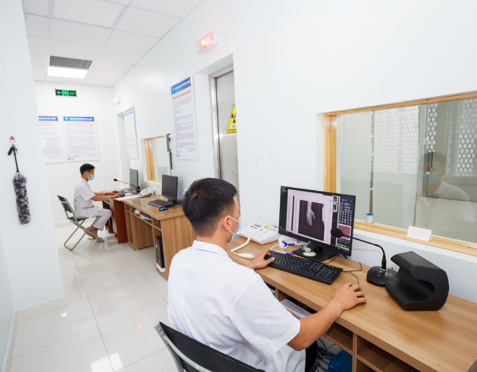

Chỉ với 6 bước đơn giản, bạn đã có thể đặt lịch khám với hơn 1.000 bác sĩ uy tín. Hướng dẫn áp dụng cho cả máy tính và điện thoại.
Truy cập website MediBook
Mở trình duyệt (Chrome, Edge, Firefox...) và truy cập medibook.vn. Trang chủ sẽ hiển thị thanh tìm kiếm và danh sách chuyên khoa nổi bật.

Tìm bác sĩ hoặc chuyên khoa
Sử dụng thanh tìm kiếm ngay tại trang chủ để gõ tên bác sĩ, chuyên khoa hoặc bệnh viện. Hệ thống sẽ gợi ý ngay lập tức.

Chọn bác sĩ phù hợp
Xem hồ sơ chi tiết: chuyên môn, kinh nghiệm, phí khám, đánh giá thực tế. Nhấn "Đặt lịch khám" trên thẻ bác sĩ.
Chọn ngày & khung giờ
Lịch trống của bác sĩ được hiển thị theo ngày. Chọn khung giờ phù hợp - các slot đã đặt sẽ bị mờ.
Điền thông tin bệnh nhân
Nhập họ tên, số điện thoại, email và mô tả triệu chứng (nếu có). Thông tin được mã hóa và bảo mật tuyệt đối.

Xác nhận và nhận thông báo
Kiểm tra lại thông tin và bấm "Xác nhận đặt lịch". Bạn sẽ nhận email/SMS xác nhận trong vài phút và được nhắc lại 1 giờ trước giờ khám.